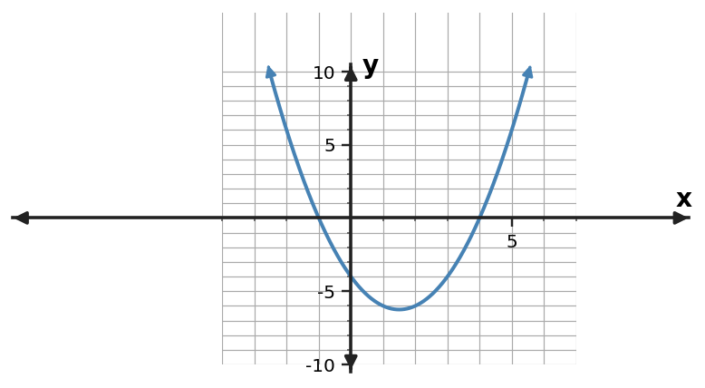

For $y=(x+1)(x-6)$, determine the zeros and $x$-intercepts.
For $y=(x+4)(x-5)$, determine the zeros and $x$-intercepts.
For $y=(x+5)(x-3)$, determine the zeros and $x$-intercepts.
For $y=(x-2)(x-6)$, determine the zeros and $x$-intercepts.
A monic quadratic has zeros $x=-3$ and $x=5$. Write it in factored form.
A monic quadratic has zeros $x=-6$ and $x=2$. Write it in factored form.
A monic quadratic has zeros $x=2$ and $x=7$. Write it in factored form.
A monic quadratic has zeros $x=-2$ and $x=8$. Write it in factored form.
Solve $(x+4)(x-3)=0$.
Solve $(x-3)(x+4)=0$.
Solve $(x+1)(x-7)=0$.
Solve $(x-2)(x-5)=0$.
Use the quadratic table to identify the zeros and write a monic factored form.
| $x$ | $y$ |
|---|---|
| $-3$ | $0$ |
| $-2$ | $-6$ |
| $-1$ | $-10$ |
| $0$ | $-12$ |
| $1$ | $-12$ |
| $2$ | $-10$ |
| $3$ | $-6$ |
| $4$ | $0$ |
Use the graph to identify the zeros and write a monic factored-form equation.

A quadratic has zeros -2 and 4 and passes through $(0,-16)$. Determine $a$ in $y=a(x+2)(x-4)$.
A quadratic has zeros -3 and 1 and passes through $(0,12)$. Determine $a$ in $y=a(x+3)(x-1)$.
A quadratic has zeros 2 and 5 and passes through $(0,20)$. Determine $a$ in $y=a(x-2)(x-5)$.
A profit model is $P(t)=-(t-4)(t-10)$, where $t$ is weeks after launch. When does the model predict zero profit?
A height model is $h(t)=-4(t+1)(t-5)$. One algebraic zero is $t=-1$. Which zero is meaningful for time after launch, and why?
A student says the zeros of $y=(x+4)(x-6)$ are 4 and -6. Diagnose the sign error.
Without expanding, state where $y=2(x+3)(x-7)$ crosses the $x$-axis.
Write a factored-form quadratic with zeros -5 and 5 and leading coefficient 2.
Compare $y=(x+3)(x-6)$ and $y=3(x+3)(x-6)$. What key intercept feature stays the same?
The table shows two zeros. What factor must correspond to each zero in a factored form?
| $x$ | $y$ |
|---|---|
| $-4$ | $0$ |
| $3$ | $0$ |
For $y=(x+1)(x-6)$, determine the zeros and $x$-intercepts.
Zeros $x=-1,6$; intercepts $(-1,0)$ and $(6,0)$.
For $y=(x+4)(x-5)$, determine the zeros and $x$-intercepts.
Zeros $x=-4,5$; intercepts $(-4,0)$ and $(5,0)$.
For $y=(x+5)(x-3)$, determine the zeros and $x$-intercepts.
Zeros $x=-5,3$; intercepts $(-5,0)$ and $(3,0)$.
For $y=(x-2)(x-6)$, determine the zeros and $x$-intercepts.
Zeros $x=2,6$; intercepts $(2,0)$ and $(6,0)$.
A monic quadratic has zeros $x=-3$ and $x=5$. Write it in factored form.
$y=(x+3)(x-5)$
A monic quadratic has zeros $x=-6$ and $x=2$. Write it in factored form.
$y=(x+6)(x-2)$
A monic quadratic has zeros $x=2$ and $x=7$. Write it in factored form.
$y=(x-2)(x-7)$
A monic quadratic has zeros $x=-2$ and $x=8$. Write it in factored form.
$y=(x+2)(x-8)$
Solve $(x+4)(x-3)=0$.
$x=-4$ or $x=3$.
Solve $(x-3)(x+4)=0$.
$x=3$ or $x=-4$.
Solve $(x+1)(x-7)=0$.
$x=-1$ or $x=7$.
Solve $(x-2)(x-5)=0$.
$x=2$ or $x=5$.
Use the quadratic table to identify the zeros and write a monic factored form.
| $x$ | $y$ |
|---|---|
| $-3$ | $0$ |
| $-2$ | $-6$ |
| $-1$ | $-10$ |
| $0$ | $-12$ |
| $1$ | $-12$ |
| $2$ | $-10$ |
| $3$ | $-6$ |
| $4$ | $0$ |
Zeros $x=-3,4$; $y=(x+3)(x-4)$.
Use the graph to identify the zeros and write a monic factored-form equation.
Zeros $x=-1,4$; $y=(x+1)(x-4)$.
A quadratic has zeros -2 and 4 and passes through $(0,-16)$. Determine $a$ in $y=a(x+2)(x-4)$.
$a=2$.
A quadratic has zeros -3 and 1 and passes through $(0,12)$. Determine $a$ in $y=a(x+3)(x-1)$.
$a=-4$.
A quadratic has zeros 2 and 5 and passes through $(0,20)$. Determine $a$ in $y=a(x-2)(x-5)$.
$a=2$.
A profit model is $P(t)=-(t-4)(t-10)$, where $t$ is weeks after launch. When does the model predict zero profit?
$t=4$ and $t=10$ weeks.
A height model is $h(t)=-4(t+1)(t-5)$. One algebraic zero is $t=-1$. Which zero is meaningful for time after launch, and why?
$t=5$; negative time is outside the stated context.
A student says the zeros of $y=(x+4)(x-6)$ are 4 and -6. Diagnose the sign error.
Set each factor equal to zero: $x=-4$ and $x=6$.
Without expanding, state where $y=2(x+3)(x-7)$ crosses the $x$-axis.
$x=-3$ and $x=7$.
Write a factored-form quadratic with zeros -5 and 5 and leading coefficient 2.
$y=2(x+5)(x-5)$.
Compare $y=(x+3)(x-6)$ and $y=3(x+3)(x-6)$. What key intercept feature stays the same?
The zeros and $x$-intercepts stay the same; the leading factor changes vertical scale/direction, not the factor zeros.
The table shows two zeros. What factor must correspond to each zero in a factored form?
| $x$ | $y$ |
|---|---|
| $-4$ | $0$ |
| $3$ | $0$ |
Factors $(x+4)$ and $(x-3)$.